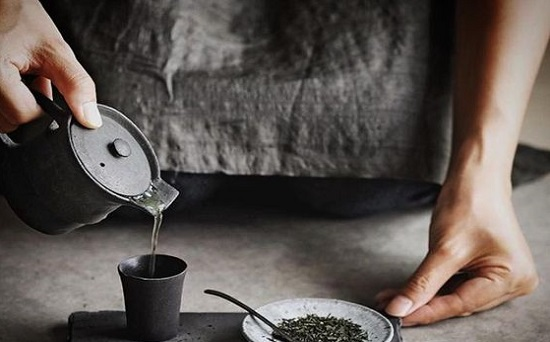

When the tea culture became more and more popular in New York, as a tea enthusiast, Tai Wu decided to open a tea shop to share his love for tea. Teahouse was founded in East Village, New York 2017. It not only serves a wide variety of teas, but also it offers a variety of exquisite hand-made drinks.

At Teahouse Tea, you can taste roasted tea from Shizuoka, Japan, organic oolong tea from Taiwan and Chinese black tea from Tuen Mun. We choose the most suitable tea for our base tea, and also ensure that the taste of the tea is the best. Most importantly, we carefully control the sweetness of each drink to ensure that our drinks are served in a healthier way. TeaHouse Tea House also offers a comfortable and stress-free environment that allows customers to chat and drink tea.
Each cup serving is curated to bathe with nourishment from the rich exotic blends. We currently have six exotic flavors to satisfy your taste buds, but we are working hard to explore other exotic flavors to bring your tea experience to another level.